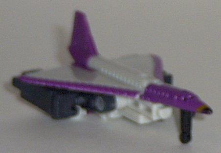
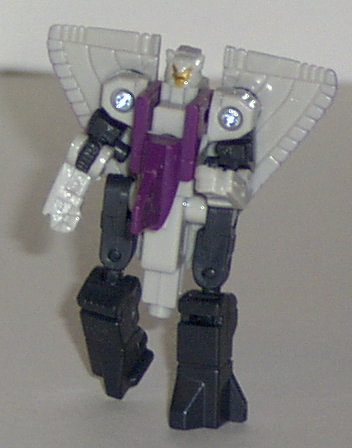
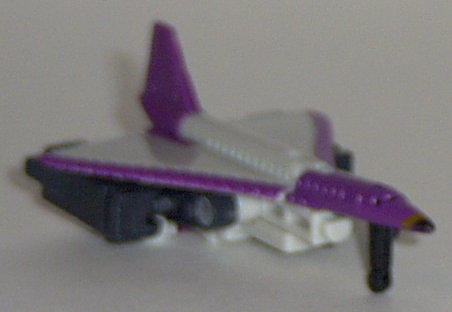
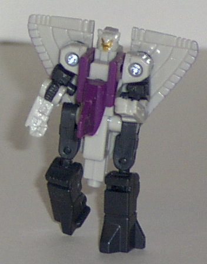
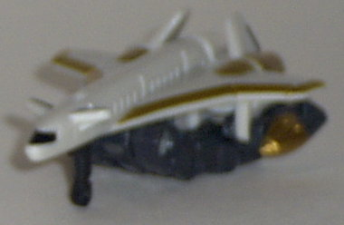
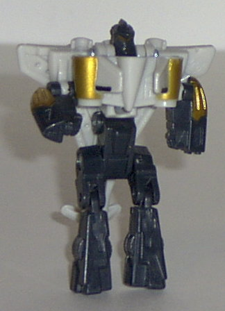
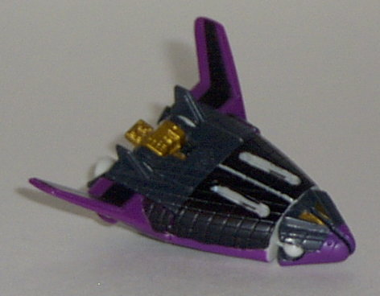
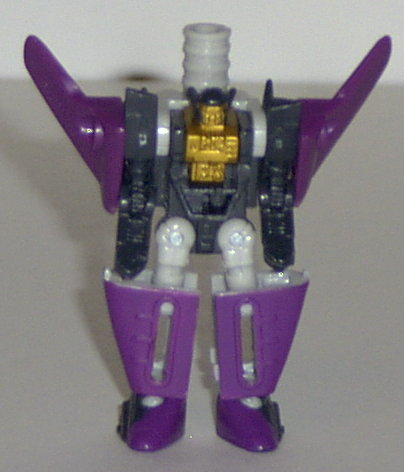
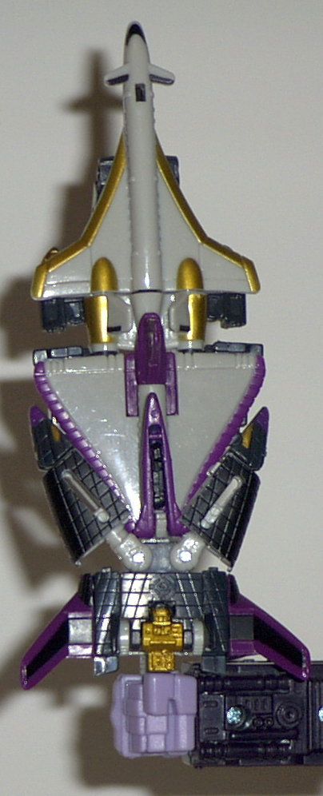

Jetstorm
Jetstorm
 
Difficulty of Transformation : Easy
Color Scheme : Gray-white, greenish black, purple, and some gold
Individual Rating : 6.5
Air
Assault Team
Allegiance
: Minicon
Size
: Mini-Con (3-pack)
Team Gimmick
: Ability to combine
into the
Dark Saber
sword
Overall Rating
: 5.6
(NOTE: Because this set is a repaint, this
is not a full-blown review. This mainly covers any changes made to the
mold and the color scheme, and merely compares it the Air Defense Team.
For a review on the mold itself, read the review of the Air Defense Team
here
.)
Jetstorm


Difficulty of Transformation
: Easy
Color Scheme
: Gray-white, greenish
black, purple, and some gold
Individual Rating
: 6.5
This time around, Jetstorm
has a primarily black-and-white color scheme, with some purple highlights
thrown in for good measure. It's a pretty nice color scheme, but a couple
of minor beefs with the color scheme. First off, as with the other Air
Assault Team members, the black actually has a weird greenish tint to it,
and doesn't look quite as cool as just solid black. Also, the large amount
of gray-white plastic on this kinda defeats the purpose of this being a
"dark" version of the Air Defense Team. Also, now that the transparent
plastic is solid in Jetstorm, the robot legs tucked under the wings in
plane mode no longer serve the purpose of making the wings look "solid".
Now they're just extras, meh. A darker color probably would have been a
bit better. I do love the gold and purple, though. Wonderful. Although
a bit more paint detailing in the robot mode would have been rather nice...
No mold changes have
been made to Jetstorm.
Runway


Difficulty of Transformation
: Very
Easy
Color Scheme
: Gray-white, greenish
black, and gold
Individual Rating
: 4.7
I think that this version
of Runway is a bit better than the previous- namely because the black,
gold, and white work together very well. Although, again, the black has
that odd greenish tint to it, which I don't find appealing. Runway also
has a very limited color scheme- only three colors! Some more paint detailing
of a different color- maybe a touch of purple here or there- would have
been preferable. Also, like with Jetstorm, although Runway's grayish-white
vehicle mode is nice by itself, it defeats the purpose of being a "dark"
version of the older Runway by being so... light.
No mold changes have
been made to Runway.
Sonar


Difficulty of Transformation
: Very
Easy
Color Scheme
: Greenish black, purple,
gray-white, and some gold and black
Individual Rating
: 8.0
Sonar's color scheme
is quite the improvement over his old one (although the old one certainly
wasn't bad, either). Black and purple- with just a TOUCH of grey-white
like it is here- practically bleeds evil, and the bit of gold works wonders
as well. Sonar, you evil little demon, you. My only complaint is that Sonar's
solid black paint is noticeably different from his greenish black plastic
parts, and it doesn't meld well in vehicle mode. Stupid greenish black...
No mold changes have
been made to Sonar.
Dark
Saber

Difficulty of Transformation
: Very
Easy
Color Scheme
: Greenish black, purple,
gray-white, gold, and some black
Individual Rating
: 3.1
I don't like the Dark
Saber quite as much as the Star Saber- namely because such a major color
of it is gray-white, which doesn't make much sense on a DARK Saber. The
rest of it looks pretty good, though- the black, gold, and purple go well
with
Galvatron
, which is who the Saber is
meant for. Because it's meant for Galvy, the Dark Saber doesn't have the
Star Saber's light-up gimmick- which is just as well, since it didn't work
very well anyways.
No mold changes have
been made to the Dark Saber, although people have reported that, overall,
the Dark Saber holds together slightly better than the Star Saber. Probably
because of the change from translucent plastic to the slightly-more-malleable
solid plastic.
The Air Assault Team is pretty nice, but overall, I think a couple of questionable color choices were made- such as the inclusion of that weird greenish black instead of just plain black, as well as the overuse of gray-white. There's also not nearly as much variety in the color scheme as their was on the Air Defense Team. However, the black, purple, and gold go quite well together, which is why I place the Air Assault Team on par with the Air Defense Team. I'd go for one just as much as I'd go for the other.
No Stats
Review by Beastbot